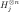

The Recursive Bernstein-Vazirani Algorithm
June 4, 2018
Based on notes available at: https://courses.cs.washington.edu/courses/cse599d/06wi/lecturenotes7.pdf
Contents
1 Notation
A is a vector of binary numbers. A summation is a summation over all possible binary numbers: . A dot product between two vectors is .
2 Tricks
2.1 Hadamard gate
The Hadamard gate on qubits can be written in the following notation:
Define as
One can verify that
And the Hadamard gate could be written as
Therefore the Hadamard gate transfer between the basis where information is recorded in qubit register () and the basis where information is recorded in the phase (). A special state which will be used often is
2.2 Phase kickback
For a classical function , its analogous quantum gate is . Quantum computation can calculate this in a parallel manner as a phase gate by
where are some arbitrary non-zero phase. If we ignore the ancilla qubit, then is acting as a phase on every on “parallel".
3 The recursive Bernstein-Vazirani
The recursive Bernstein-Vazirani problem (rBV) of level asks us to find an n-bit number through a series of oracles provided. The first oracle provided is , where we need to find out the number . The following oracles are
The final is slightly different because . Here we would step by step find out the numbers , until finally we have . Classically the query complexity is lowered bounded as .
3.1 A quantum algorithm
Here we present a simple quantum algorithm to the th level rBV problem. The quantum register are initialised in the state:
Here the first  qubits are grouped into qubit registers, each having qubits. The rest of qubits are ancilla qubits prepared in the state. Although for simplicity we will
ignore them in the following calculation, it should be noted that the ancilla qubits are important for the phase kickback trick mentioned before. Also for simplicity, we will ignore all normalisation constant for for the following discussion. Therefore
the initial state of qubit register is written as:
qubits are grouped into qubit registers, each having qubits. The rest of qubits are ancilla qubits prepared in the state. Although for simplicity we will
ignore them in the following calculation, it should be noted that the ancilla qubits are important for the phase kickback trick mentioned before. Also for simplicity, we will ignore all normalisation constant for for the following discussion. Therefore
the initial state of qubit register is written as:

Define the quantum version of oracles as
![(3–3.1.5) \{begin}{align} & f\ket {\vec {x}_1,\cdots ,\vec {x}_k} = (-1)^{\vec {x}_k\vdot \vec {s}_{\vec {x}_1,\cdots ,\vec {x}_{k-1}}} \ket {\vec {x}_1,\cdots ,\vec {x}_k},\\
& g_j \ket {\vec {x}_1,\cdots , \vec {x}_j, \vec {s}_{\vec {x}_1,\cdots ,\vec {x}_j} ,\vec {x}_{j+2},\cdots ,\vec {x}_k}\nonumber \\ & = (-1)^{\vec {x}_j \vdot \vec {s}_{\vec {x}_1,\cdots ,\vec {x}_{j-1}}} \ket {\vec
{x}_1,\cdots , \vec {x}_j, \vec {s}_{\vec {x}_1,\cdots ,\vec {x}_j} ,\vec {x}_{j+2},\cdots ,\vec {x}_k},\nonumber \\ & \;\text {for } j=k-1,k-2,\cdots ,2,\\ & g_1 \ket {\vec {x}_1, \vec {s}_{\vec {x}_1}, \vec {x}_3, \cdots
,\vec {x}_k} = (-1)^{\vec {x}_1 \vdot \vec {s}} \ket {\vec {x}_1, \vec {s}_{\vec {x}_1}, \vec {x}_3, \cdots ,\vec {x}_k}, \{end}{align}](lateximages/lateximage-42.svg)
where we have used the phase kickback trick mentioned in section 2.2 and ignored the ancilla qubits. Notice that all quantum oracles are meaningless phase gate unless a superposition of basis are present. In the following, we will always ensure a superposition of the form
is present for to act on. Here are some non-zero phases.
A quantum algorithm to solve the rBV problem depends on the following operators  , defined recursively by:
, defined recursively by:
Here the  is simply the bit Hadamard gate acting on the th register. Each operator solve the th level rBV problem. Specifically, the first operator does the following:
![(11–3.1.13) \{begin}{align} & D_k \sum _{\vec {x}_1,\cdots ,\vec {x}_k} \ket {\vec {x}_1,\cdots ,\vec {x}_k}\nonumber \\ = & H^{\otimes n}_k \sum _{\vec {x}_1,\cdots ,\vec
{x}_k} (-1)^{\vec {x}_k\vdot \vec {s}_{\vec {x}_1,\cdots ,\vec {x}_{k-1}}} \ket {\vec {x}_1,\cdots ,\vec {x}_k} \\ = & H_k^{\otimes n} \sum _{\vec {x}_1,\cdots ,\vec {x}_{k-1}} \ket {\vec {x}_1,\cdots ,\vec {x}_{k-1},P_{\vec
{s}_{\vec {x}_1,\cdots ,\vec {x}_{k-1}}}} \\ = & \sum _{\vec {x}_1,\cdots ,\vec {x}_{k-1}} \ket {\vec {x}_1,\cdots ,\vec {x}_{k-1},\vec {s}_{\vec {x}_1,\cdots ,\vec {x}_{k-1}}}. \{end}{align}](lateximages/lateximage-56.svg)
Notice that if there are some arbitrary non-zero phases in front of on the first line, the final result will not change except from this arbitrary phase. can be understood as the following diagram:
The second operator does the following next:
![(15–3.1.19) \{begin}{align} & D_{k-1} \sum _{\vec {x}_1,\cdots ,\vec {x}_{k-1}} \ket {\vec {x}_1,\cdots ,\vec {x}_{k-1},\vec {s}_{\vec {x}_1,\cdots ,\vec {x}_{k-1}}} \\ =&
H^{\otimes n}_{k-1} D^\dagger _k \sum _{\vec {x}_1,\cdots ,\vec {x}_{k-1}} (-1)^{\vec {x}_{k-1}\vdot \vec {s}_{\vec {x}_1,\cdots ,\vec {x}_{k-2}}} \ket {\vec {x}_1,\cdots ,\vec {x}_{k-1},\vec {s}_{\vec {x}_1,\cdots ,\vec {x}_{k-1}}}
\\ =& H^{\otimes n}_{k-1} \sum _{\vec {x}_1,\cdots ,\vec {x}_{k}} (-1)^{\vec {x}_{k-1}\vdot \vec {s}_{\vec {x}_1,\cdots ,\vec {x}_{k-2}}} \ket {\vec {x}_1,\cdots ,\vec {x}_{k-1},\vec {x}_{k}} \\ =& H^{\otimes n}_{k-1} \sum
_{\vec {x}_1,\cdots ,\vec {x}_{k-2}} \ket {\vec {x}_1,\cdots ,\vec {x}_{k-2}, P_{\vec {s}_{\vec {x}_1,\cdots ,\vec {x}_{k-2}}},P_0} \\ =& \sum _{\vec {x}_1,\cdots ,\vec {x}_{k-2}} \ket {\vec {x}_1,\cdots ,\vec {x}_{k-2}, \vec
{s}_{\vec {x}_1,\cdots ,\vec {x}_{k-2}},P_0} \{end}{align}](lateximages/lateximage-62.svg)
Similarly, we have the following diagram for :
![(3.1.20) \begin{equation} \begin {tikzcd} \ket {\cdots ,\vec {x}_{k-1},\vec {s}_{\vec {x}_1,\cdots ,\vec {x}_{k-1}}} \arrow [r, "\text {load phase}", "g_{k-1}"
below,] \dar [bend left, "D_{k-1}"] \& (-1)^{\cdots } \ket {\vec {x}_1,\cdots ,\vec {x}_{k-1},\vec {s}_{\vec {x}_1,\cdots ,\vec {x}_{k-1}}} \dar ["D^\dagger _k"] \\ \ket {\cdots ,\vec {s}_{\vec {x}_1,\cdots
,\vec {x}_{k-2}},P_0} \uar [bend left, "D^\dagger _{k-1}"] \& (-1)^{\cdots } \ket {\vec {x}_1,\cdots ,\vec {x}_{k-1},\vec {x}_{k}} \lar ["\text {unload phase}" above, "H"] \end {tikzcd}
\end{equation}](lateximages/lateximage-64.svg)
Similarly for , we use to load the phase , and use to solve the lower level rBV problem, and use Hadamard gate to unload the phase into basis:
The operators solves the lower level problem by gradually moving the number to the end:
And finally we note that:
With a measurement in the computational basis, one can with certainty find the number . Therefore, the combined operators solves the th level rBV problem.
3.2 Complexity of quantum algorithm
The number of gates ( bit Hadamard and quantum queries) taken in is . In is , in is . In general, in there are
bit Hadamard gates and quantum query gates. Hence, the total complexity is:
If , then the quantum complexity is whereas the classical complexity is lower bounded as .